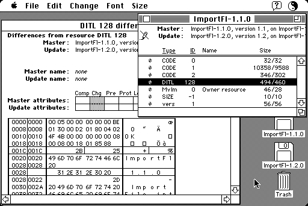

Download
rescompare2.53.zip (90K) ResCompare 2.5.3 repackaged into a zipped hfs disk image and checksum file. The disk image can be mounted with Mini vMac.
rescompare2.53.sit.hqx (127K) ResCompare 2.5.3 in the original format.
copyright: Michael Hecht
mod date: Mar 23, 1993
license: free for non-commercial use
A "programmer’s utility that compares resource files." Can also "create a Patch application that will apply changes to applications and other files, which you can use to distribute upgrades of your software without sending a new copy of the entire application".

If you find these downloads useful, please consider helping the Gryphel Project, which hosts them.
Here are the md5 checksums for the downloads, signed with Gryphel Key 5:
--------- GRY SIGNED TEXT --------- ce77e737fb8413011c7666c7f686cebb rescompare2.53.zip 9672a25d15ad3aaa678ad18446747ebe rescompare2.53.sit.hqx ------- BEGIN GRY SIGNATURE ------- Gry/4Xa8CFcUzxdN/BqEOOpb1gCDyxxj78kOB3UX9M5Ci7yI3UhL2nCimYATXs4k a/pZOchDr1nHQks1YH8xzOr0jyPjYF5hiTh2prDVwoSaAhxg38hiE1whnqqUoDIB HsrdiW0RMBm/vm6Lpr3I9uBtSg7+qXfVDBN1NRsMTj7eBA4f1rq2CfqKBGtLcoZX -------- END GRY SIGNATURE --------